Meet the Officers
Aaron Hu:
Co-President
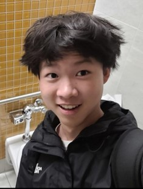
Aaron Hu is a senior at Lawton Chiles High School. He began competing in Mathcounts in sixth grade and since then has participated in FAMAT and the AMC series. He joined FLSAM in seventh grade and has enjoyed the various competitions they attend. His favorite part of math is algebra. Besides doing math, he spends his time playing basketball, listening to music, and napping.
Alexander Li:
Co-President
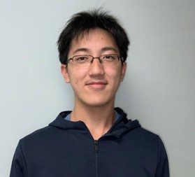
Alexander Li is a senior at King High School. He began competing through AMC 8, and later Mathcounts in middle school, joining FLSAM in 7th grade. His favorite topic is calculus. When he is doing math, Alex likes solving and writing contest problems. When he is not doing math, Alex may be found studying physics or sleeping.
Andrew Xing:
Co-Vice President
.png)
Andrew Xing is a junior at Buchholz High School. He started competitive math in 4th grade, and has participated in various national and statewide events, including FAMAT, AMC, and Mathcounts. He joined FLSAM in eighth grade, and has enjoyed participating in the multiple competitions they hold. His favorite subject in math is geometry, and he has a lot of fun teaching others. Some of his favorite pastimes outside of math include contemplating his life choices, listening to a far too wide range of music, attempting to expand his interests, and playing video games.
Xuzhou Ren:
Co-Vice President
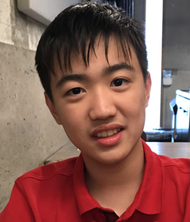
Xuzhou Ren is a junior at American Heritage School. He enjoys nuking geometry problems and writing projective geometry and graph theory problems. Outside of math, he enjoys investing and writing his food blog.
Jessica Wan:
Curriculum Committee Chair
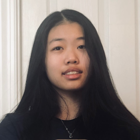
Jessica Wan is a high school senior who's enjoyed contest math since elementary school. She has participated in various contests and olympiads, including Mathcounts, USAMO, and EGMO. After joining FLSAM in 9th grade, she competed with the team at HMMT and PUMaC. Outside of competition math, she enjoys studying abstract algebra, crocheting, and puzzling.
Shivin Anand:
Webmaster
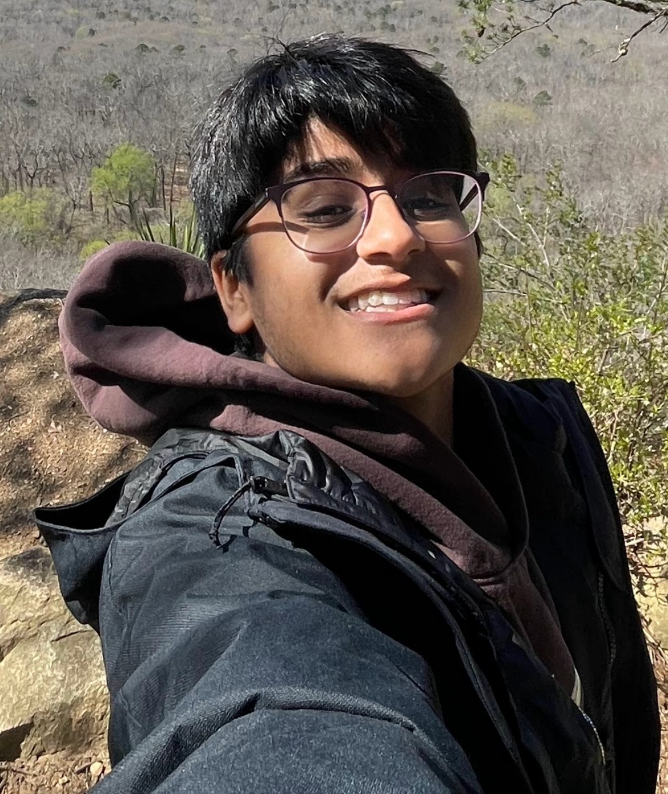
Shivin Anand is a sophomore at Middleton High School. He has been taking part in math competitions since the 5th grade. He joined FLSAM in the 9th grade and has enjoyed the many opportunities it has been able to provide. His favorite kind of math is 2-D geometry, and conics are his least favorite. When he is not navigating the world of mathematics, he enjoys playing video games, golfing, and listening to music.
Aaryan Vaishya:
Curriculum Committee
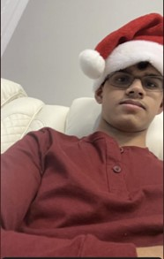
Aaryan Vaishya is a sophomore at Middleton High School. He has been competing in math contests since 2020, qualifying for MOP 2023. He has been in FLSAM since 7th grade, and his favorite branch of math is combinatorics. He enjoys geometry if and only if GGB is involved. Outside of math, he enjoys competitive programming, actual programming, piano, soccer, and anything he comes across with the exception of golf.
Tom Zhang:
Curriculum Committee

Tom Zhang is a senior at American Heritage Palm Beach. He started doing math competitions, joined FLSAM in 9th grade, and participated in competitions like FAMAT, CMIMC, and ARML. His favorite topic in math is geometry. Besides doing math, he loves playing soccer, listening to music, and playing video games.
Kevin Lui:
Curriculum Committee
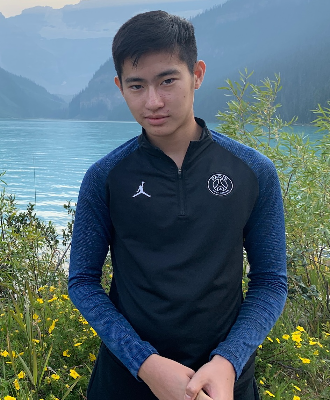
Kevin Lui is a sophomore at Marjory Stoneman Douglas High School. He started math competitions at the AMC8 at 4th grade. He is a two-time Florida State MATHCOUNTS Champion, four-time AIME qualifier, three-time USAJMO qualifier, USAJMO top winner, MOPper, and USA IMO TST grouper. After joining FLSAM in seventh grade, he competed with the team at various national math competitions, such as ARML, HMMT, PUMAC, CMIMC and SMT. Outside of math, he enjoys coding, playing video games especially Geometry Dash. He is in the USACO gold division.
Yuhan Niu:
Curriculum Committee
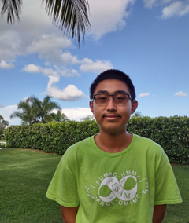
Yuhan Niu is a senior at American Heritage School Palm Beach. He started participating in math competitions through FAMAT in 5th grade, before gradually moving into Mathcounts and AMC in middle school. He enjoys discussion with others on whatever various topics that come to mind. These topics generally fall into the categories of science, geography, history, languages, and sports, but they are definitely not limited to them. He is focused on improving in physics and math olympiads, both conceptually and methodically. Yuhan has the philosophy that whatever there is to learn, it can all be learned with enough time.
Sailalitha Kodukula:
Curriculum Committee
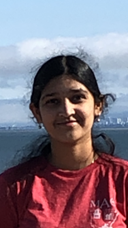
Sailalitha Kodukula is a junior at American Heritage School. She has been competing in competitions such as the AMC 8 and AMC 10 since middle school. Since then, she has developed a passion for mathematics and has participated in other completions such as AIME, FAMAT, MATHCOUNTS, ARML, and CMIMC. In her free time, she enjoys listening to music, singing, and programming.
Aaron Zhang:
Curriculum Committee

Aaron Zhang is a senior at American Heritage Broward. His first competitive math experience was at a local elementary school competition. His passion for mathematics truly began while competing in Mathcounts in 7th grade, now participating in AMC and FAMAT. Apart from doing math, Aaron enjoys playing violin and baseball. He looks forward to the new year with FLSAM!
Darsh Patel:
Curriculum Committee
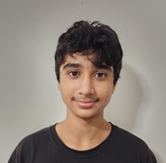
Darsh Patel is a sophomore at American Heritage Broward. Since middle school, he has participated in math contests like MathCounts, AMC, and FAMAT, as well as ARML and CMIMC after discovering FLSAM. His favorite area of math is number theory. Outside of math, he enjoys playing chess and trying to program.
Jayden Lang:
Curriculum Committee

Jayden Lang is a sophomore at American Heritage Broward. He began participating in math competitions in 4th grade, and has participated in many more contests since then, including Mathcounts, AMC, and Mu Alpha Theta competitions. Ever since discovering FLSAM at the start of middle school, Jayden has also partaken in various competitions with the FLSAM team, such as ARML and CMIMC. Apart from his interests in mathematics, Jayden loves to play soccer, piano, and chess, as well as listen to music.
Arib Syed:
Region 1 Coordinator
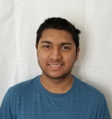
Arib Syed is a senior at Lawton Chiles High School. He began competing in Mathcounts in sixth grade and since then has participated in FAMAT and the AMC series. He joined FLSAM in seventh grade and has enjoyed it ever since. His favorite parts of math are geometry and number theory, and he loves AMC style questions. Besides doing math, he spends his time playing tennis, watching movies, and playing video games.
Katie:
Region 2 Coordinator
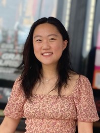
Katie is a junior at Buchholz High School. She started competitive math 8 years ago and continues to participate in competitions like FAMAT, ARML, and the AMC series. She joined FLSAM in middle school, and her favorite math subject is combinatorics. Outside of math, she enjoys swimming, playing tennis, listening to music, and petting her cat
Amrit Vignesh:
Region 3 Coordinator
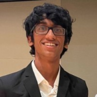
Amrit Vignesh is an IB senior in Seminole High School in Sanford, FL. He has been competing in various math competitions since 5th grade, including MathLeague, MATHCOUNTS, FAMAT, AMC, and AIME. He is interested in pursuing a career either in nanotechnology or sports analytics and would like to pursue a double major in college with materials science/engineering and data science. In his free time, he likes to watch and analyze football, basketball, soccer, cricket, tennis, and F1.
Vignesh Saravanan:
Region 4a Coordinator
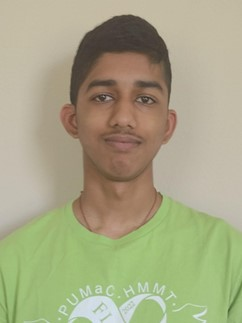
Vignesh Saravanan is a senior at King High School. He began participating in math competitions in 6th grade with MATHCOUNTS and Mu Alpha Theta later on. He joined FLSAM in 10th grade. His favorite topic in math is geometry. Aside from doing math, he also enjoys watching movies, sleeping, and learning science.
Rui Jiang:
Region 4b Coordinator
Curriculum Committee
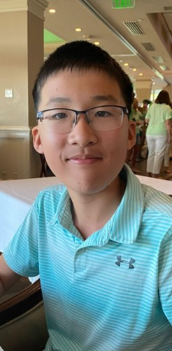
My name is Rui Jiang and I’m a junior at Pine View School. I have been doing math competitions since I started taking the AMC 8 in 6 th grade. Since then, I have participated in other math competitions such as USAJMO, Mathcounts, ARML, and PUMAC. Outside of math, I like to play chess, tennis, and video games.
Ava Havidic:
Region 5a Coordinator
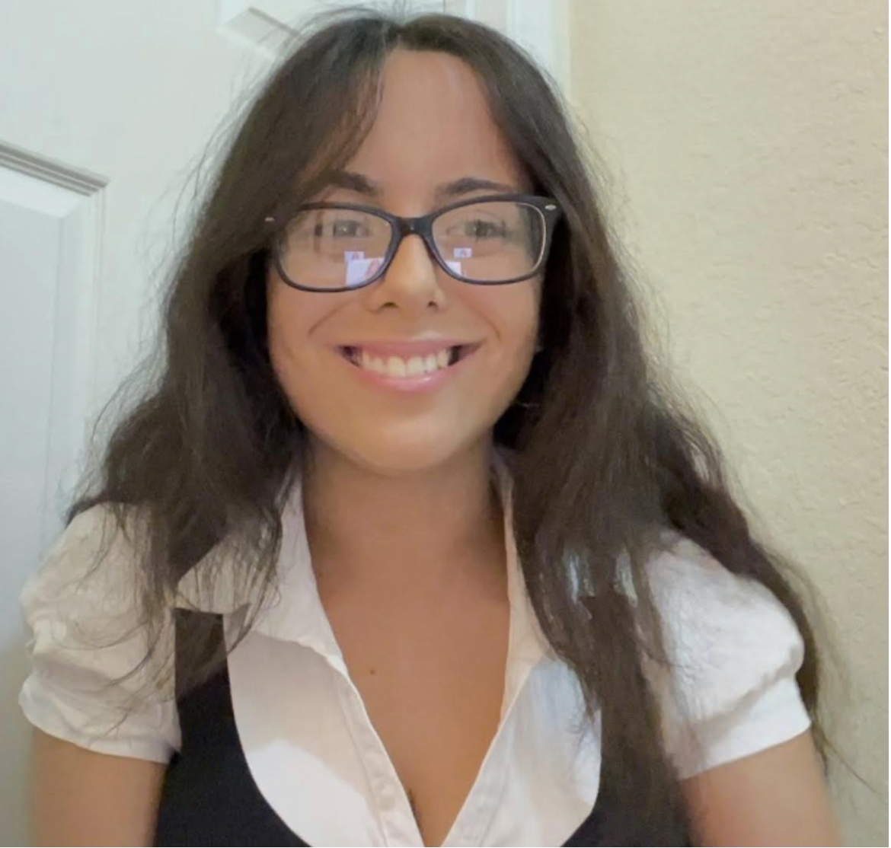
Ava Havidic, a senior attending Millennium 6-12 Collegiate Academy, has loved attending math competitions since middle school. When not leading her MAT team or hosting district wide tutoring, she is often traveling, studying a new language, or working to promote the inclusivity of STEAM with schools across the nation.
Aarush Chaubey:
Region 5b Coordinator
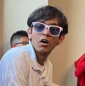
Aarush Chaubey is a senior at Doral Academy High School. He first started competing in fifth grade, and since then has competed in FAMAT, AIME, CMIMC, and HMMT. He joined FLSAM in 9th grade, and his favorite subject is (by far) geometry. Besides math, he really enjoys physics, programming, and history. When he's not doing anything school related, you can find him listening to Boogie, playing tennis, or hitting leg day!
Jeffrey Yu:
Region 5c Coordinator
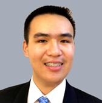
Jeffrey Yu is a Junior at American Heritage Palm Beach. He started his journey in competition mathematics in middle school, competing in the AMC and Mathcounts series. Since then, Jeffrey has discovered FLSAM and competed in HMMT, PUMaC, and ARML. Other than mathematics, Jeffrey enjoys listening to music and solving puzzles.